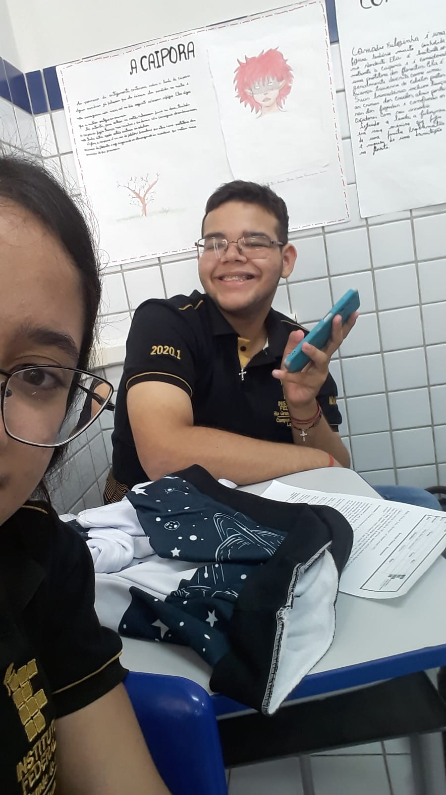

O ano era 2019, e lá estava eu e mais 4 amigas falando sobre o IF, elas queriam fazer a prova e eu não tinha nenhum tipo de interesse, mas fiquei com medo delas passarem e eu ficar sozinha, então fiz. Pedi para uma amiga fazer a inscrição pra mim no curso de administração, que era o que eu mais me identificava já que meu pai me ensinava muito sobre, mas ela esqueceu e fez para Informática, algo que nunca gostei. Depois de sair o resultado vi que só eu do meu grupo de amigas havia passado, e lá foi eu, sozinha, estudar algo que eu nunca quis e sem ninguém pra me apoiar. Quando entrei pra mim foi incrível por exatamente 3 dias e depois já vi que eu realmente não me identificava com o curso, não tinha feito nenhuma amizade e eu até saia da aula pra chorar no banheiro as vezes...
O tempo foi passando e eu consegui uns amigos, mas logo depois a pandemia chegou, e eu confesso que gostei das aulas online, não aprendi nada sobre o curso mas foi o que não me fez desistir. Depois da pandemia fui pro terceiro ano e pela primeira vez eu gostei de algo que envolvia informática, que era manutenção, ia pras aulas e sempre fazia todas as práticas. Mas durou muito pouco e logo eu entrei no quarto ano. Não sei bem explicar o que tá sendo esse ano, eu não tô feliz mas também não estou tão triste como no começo, eu fiz amizades, comecei a gostar de vários professores mas nada faz eu me interessar pelo curso. Ver todos os meus colegas compartilhando fotos, falando que vão sentir saudades fazem eu me sentir muito diferente, porque eu não tenho esse sentimento, só queria fugir mesmo.
Embora não tenha sido uma experiência 100% boa, hoje eu sou grata por ter conhecido meu melhor amigo, a pessoa que me fez sorrir nesse meio tempo. Ele é a pessoa mais incrível que já conheci.
É isso, eu só quero conseguir sair pra poder seguir meus sonhos.